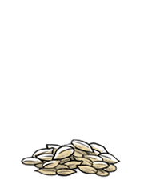

sunflower seeds
Sunflower seeds are the fruit of the sunflower. There are 3 types: linoleic (the most common), high oleic and sunflower oil seeds. The type used in the recipes on this website are of the linoleic variety. Sunflower seeds are a rich source of protein, iron and zinc.
Sunflower seeds are commonly eaten as snacks, but can be used in recipes as garnishes or bases for vegan faux-cheese sauces. Seeds are sold in-shell or dehulled, both salted and unsalted.
Weight: 1/4 cup | 1 1/4 oz | 35 g